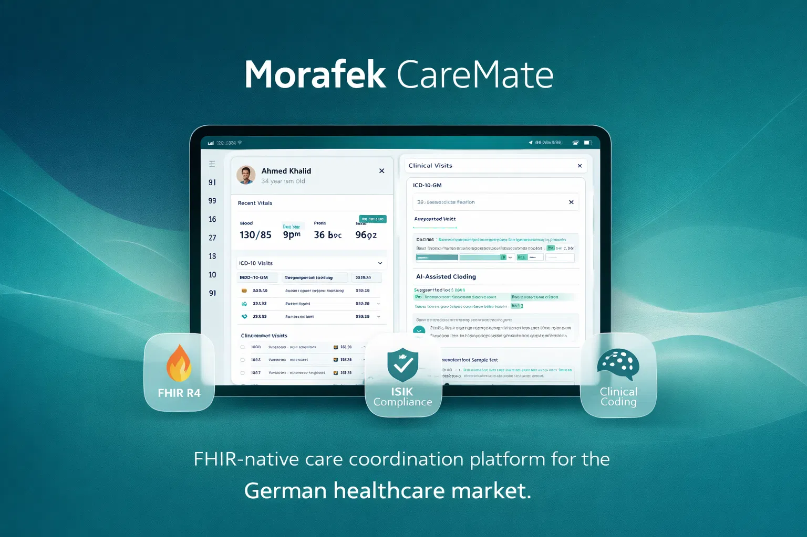
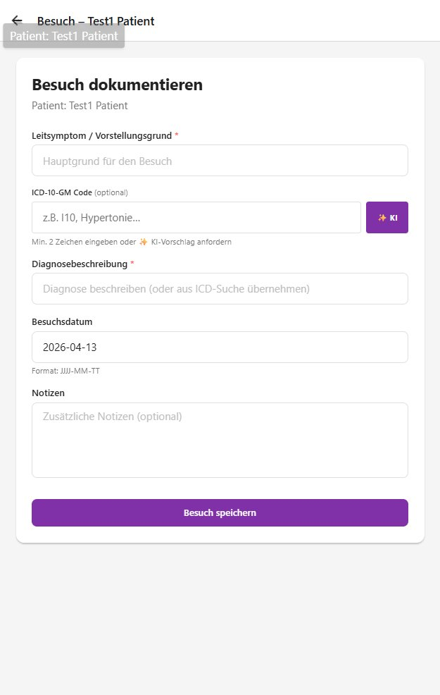
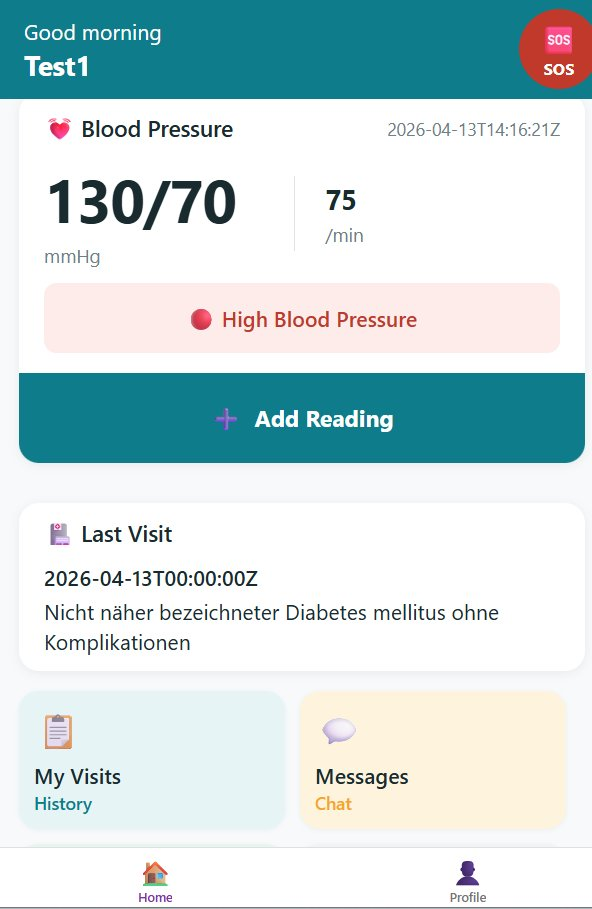
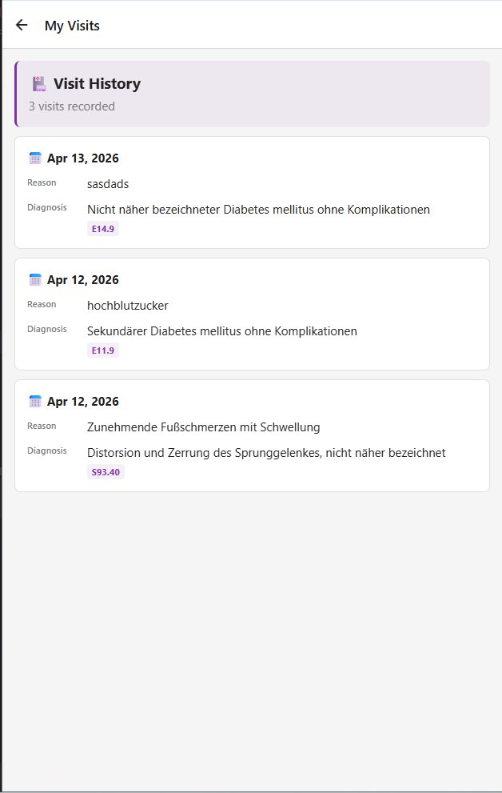
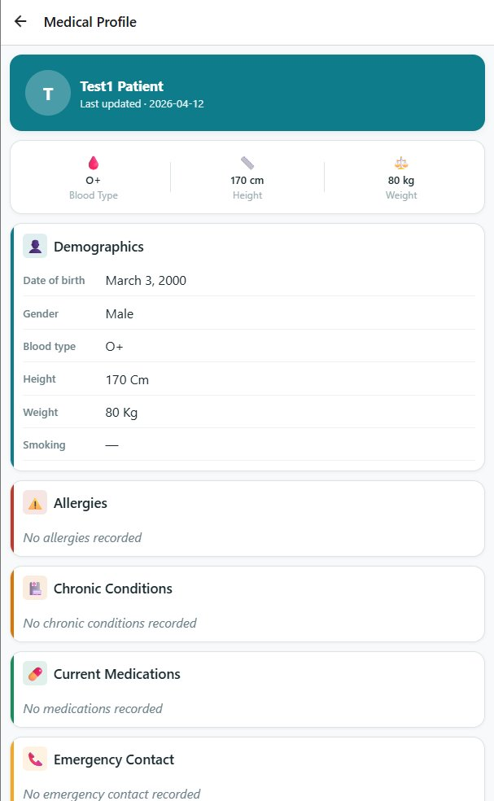

FHIR-native care coordination platform built for the German healthcare market. Manually implemented FHIR R4 resources, ISiK Stage 1 compliance, AI-assisted clinical coding, and DSGVO-ready patient consent — no pre-built FHIR server.

Every FHIR resource was hand-coded to the specification, giving full control over validation logic, German locale rules (GKV IDs, LANR), and OMOP CDM-ready schema design.
Per-patient views for vitals, visits, documents, and exercise prescriptions. Automated severity thresholds flag abnormal vitals (HR/Glucose/SpO₂/BP) in real time. Real-time BP classification from Normal to Hypertensive Crisis.
Clinicians describe an encounter in plain text; Gemini AI suggests the correct ICD-10-GM 2026 code from 14,370 options. Offline SQLite queue ensures no data loss during connectivity gaps.



